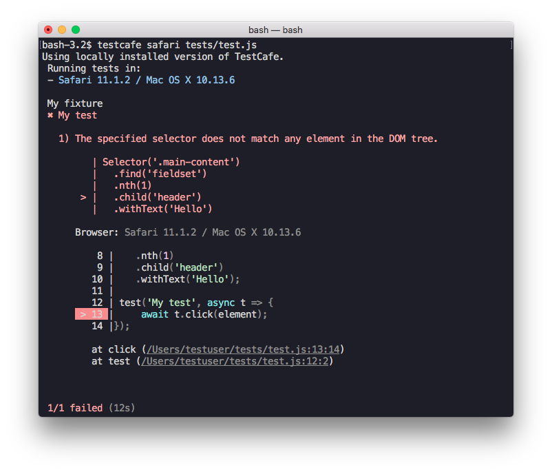

Select Page Elements
You should identify the target page element to perform an action with it (click, drag, etc.) or check its state in an assertion.
You can pass a CSS selector to an action to specify the target element:
await t.click('#my-button');
For more complex queries, however, CSS selectors get longer and difficult to read, write, and maintain:
await t.click('div > .my-class > div:nth-child(2) > span > a[href="https://my-site.com/page"]');
CSS selectors cannot query parent elements:
<html>
<body>
<!-- ... -->
<div>
<!-- you cannot query this div by its child's ID -->
<div>
<div id="query-my-parent"></div>
</div>
</div>
<!-- ... -->
</body>
</html>
TestCafe's chainable Selector functions expose methods used to traverse through the DOM tree in jQuery style. The following example illustrates how to override CSS limitations with TestCafe selectors:
const link = Selector('div')
.child('.my-class')
.child('div')
.nth(2)
.child('span')
.child('a')
.withAttribute('href', 'https://my-site.com/page');
const parent = Selector('#query-my-parent').parent();
You can use selectors to inspect elements, define action targets, and perform assertions.
- Create Selectors
- Member Tables
- Use Selectors
- Selector Timeout
- Debug Selectors
- Extend Selectors with Custom Properties and Methods
- Overwrite Options
- Framework-Specific Selectors
- Call Selectors from Node.js Callbacks
- Limitations
- Examples
Do not modify the tested webpage within selectors. To interact with the page, use test actions.
Create Selectors #
Pass a CSS selector string or a client-side function to the Selector constructor to create a selector.
import { Selector } from 'testcafe';
const article = Selector('#article-content');
// or
const article = Selector(() => {
return document.getElementById('article-content');
});
In this example, the article selector identifies an element with the article-content ID.
You can continue the selector chain to filter elements from the previous selector or traverse through the DOM tree:
import { Selector } from 'testcafe';
const seeMore = Selector('#article-content')
.child('div')
.withText('See more');
This selector does the following:
- Selects an element with the
article-contentID. - Selects its child elements.
- Filters them by the
<div>tag name. - Selects elements with text
See moreamong them.
<html>
<body>
<div id="article-content">
<p>A paragraph</p>
<div>A block</div>
<!-- This div is selected -->
<div>See more</div>
</div>
</body>
</html>
If a selector matches multiple elements, the subsequent methods return results for all elements. The following selector returns the child nodes of all <div> tags on the page, including their children and their descendants:
const sel = Selector('div').child();
<html>
<body>
<div>
<div>This element is selected.</div>
<p>This element is also selected.</p>
<div>
This div is selected as well.
<p>And even this paragraph is included.</p>
</div>
</div>
</body>
</html>
The selector value is evaluated each time you :
- use the selector for an action;
- assert selector's properties;
- call the selector directly in code to get it's state;
If the page content changes after you have declared the selector, it may point to another element, or no element.
test('Click a button', async t => {
const buttons = Selector('button').withText("A button number");
await t
.click(buttons.nth(0))
.click(buttons.nth(0))
.click(buttons.nth(0))
});
<html>
<body>
<div>
<button onclick= "this.textContent= 'Pressed';">A button number 1</button>
<button onclick= "this.textContent= 'Pressed';">A button number 2</button>
<button onclick= "this.textContent= 'Pressed';">A button number 3</button>
</div>
</body>
</html>
This sample page includes three buttons. When clicked, the button text changes. During the test, each .click affects the next element to which the selector points. All three buttons receive clicks as a result.
If a selector matches multiple elements, only the first matching element will be used for actions or when retrieving the DOM Node State. Use the .nth method to iterate through other matching elements.
You can use the selector.count property to retrieve the number of matched elements.
Member Tables #
The following methods filter elements from the selector:
| Method | Description |
|---|---|
| nth | Finds an element by its index. |
| withText | Finds an element whose content includes the specified text. |
| withExactText | Finds an element with the specified text. |
| withAttribute | Finds an element with the specified attribute or attribute value. |
| filterVisible | Selects visible elements. |
| filterHidden | Selects hidden elements. |
| filter | Finds elements that match the specified CSS selector or predicate. |
Methods that search for DOM elements relative to the selected element:
| Method | Description |
|---|---|
| find | Finds a descendant node that matches the specified CSS selector or predicate. |
| parent | Selects parent elements. |
| child | Selects child elements. |
| sibling | Selects sibling elements. |
| nextSibling | Selects succeeding sibling elements. |
| prevSibling | Selects preceding sibling elements. |
| shadowRoot | Selects the shadow root hosted by the element. |
Use Selectors #
Check if an Element Exists #
Selectors can match a single DOM element on the page, multiple elements, or nothing. Use the following properties to check if elements match and the number of matching elements:
| Property | Type | Description |
|---|---|---|
| exists | Boolean | true if at least one matching element exists. |
| count | Number | The number of matching elements. |
import { Selector } from 'testcafe';
fixture `Example page`
.page `http://devexpress.github.io/testcafe/example/`;
test('My test', async t => {
const osCount = Selector('.column.col-2 label').count;
const submitButtonExists = Selector('#submit-button').exists;
await t
.expect(osCount).eql(3)
.expect(submitButtonExists).ok();
});
Note that selector property getters are asynchronous.
Obtain Element State #
Selectors and promises (returned by selectors) expose API that allows you to obtain the matching element's state (size, position, classes, etc.).
const headerText = await Selector('#header').textContent;
See the API reference in DOMNodeState.
The API is asynchronous. Use await before methods and properties.
Example
import { Selector } from 'testcafe';
fixture `My fixture`
.page('http://devexpress.github.io/testcafe/example/');
const windowsInput = Selector('#windows');
test('Obtain Element State', async t => {
await t.click(windowsInput);
const windowsInputChecked = await windowsInput.checked; // returns true
});
DOM Node State #
To use an object's state multiple times in the test, get the object that contains all data in one turnaround to the client. To obtain this object (DOM Node State), call the selector with the await keyword:
import { Selector } from 'testcafe';
fixture `My fixture`
.page `http://devexpress.github.io/testcafe/example/`;
test('DOM Node State', async t => {
const sliderHandle = Selector('#slider').child('span');
const sliderHandleSnapshot = await sliderHandle();
console.log(sliderHandleSnapshot.hasClass('ui-slider-handle')); // => true
console.log(sliderHandleSnapshot.childElementCount); // => 0
});
Note that if a selector matches several DOM nodes on the page, this asynchronous call returns the first matching node.
TestCafe wait mechanisms do not work when you pass a snapshot's property to an assertion. To enable Smart Assertion Query, pass selector's properties instead.
Define Action Targets #
You can pass selectors to test actions to specify the action's target element.
import { Selector } from 'testcafe';
fixture `My fixture`
.page `http://devexpress.github.io/testcafe/example/`;
const label = Selector('#tried-section').child('label');
test('My Test', async t => {
await t.click(label);
});
If the selector matches multiple DOM nodes, the action is executed for the first node.
Before an action is performed, TestCafe waits for the target element to be in the DOM and become visible. If this does not happen within the selector timeout, the test fails.
You can also pass DOM element snapshots to test actions.
import { Selector } from 'testcafe';
fixture `My fixture`
.page `http://devexpress.github.io/testcafe/example/`;
const label = Selector('#tried-section').child('label');
test('My Test', async t => {
const labelSnapshot = await label();
await t.click(labelSnapshot);
});
In this instance, the selector that fetched this snapshot is re-executed before the action.
Define Assertion Actual Value #
You can pass a selector property to an assertion to check whether the DOM node has the expected state.
import { Selector } from 'testcafe';
fixture `My fixture`
.page `http://devexpress.github.io/testcafe/example/`;
test('Assertion with Selector', async t => {
const developerNameInput = Selector('#developer-name');
await t
.expect(developerNameInput.value).eql('')
.typeText(developerNameInput, 'Peter')
.expect(developerNameInput.value).eql('Peter');
});
When you pass selector properties instead of values, TestCafe enables Smart Assertion Query Mechanism to avoid errors and unstable tests. In this example, the assertion does not fail immediately if the condition does not match - TestCafe recalculates the developerNameInput.value property value until the assertion passes or the timeout expires.
Selector Timeout #
When a selector is executed, TestCafe waits for the target node to appear in the DOM until the selector timeout expires.
Use the timeout option to specify the timeout for a selector in test code.
await t.expect(Selector('#elementId', { timeout: 500 }).innerText).eql('text', 'check element text');
To set the timeout for all selectors, pass it to the runner.run API method or the --selector-timeout command line option when you launch tests. This will override the timeout options inside tests (if any).
During the timeout, the selector is re-executed until it returns a DOM node or the timeout is exceeded. If TestCafe cannot find the corresponding node in the DOM, the test fails.
You can specify that the selector should only return visible nodes. To do this, use the visibilityCheck option.
Selector timeouts have no effect on Selector.exists and Selector.count properties. These properties are evaluated immediately regardless of a timeout. To apply a timeout to exists and count assertions, pass the timeout to the assertion method (expect.ok, expect.eql, etc.).
import { Selector } from 'testcafe';
fixture `My fixture`
.page `http://www.example.com/`;
const timedOutSelector = Selector('#element-id', {timeout: 10000});
const immediateSelector = Selector('#element-id');
test('Test timeouts', async t => {
await t.expect(timedOutSelector.exists).ok();
await t.expect(immediateSelector.exists).ok();
await t.expect(timedOutSelector.count).eql(1);
await t.expect(immediateSelector.count).eql(1);
//these assertions execute immediately regardless of the selector timeout
await t.expect(immediateSelector.exists).ok({timeout: 10000});
await t.expect(timedOutSelector.exists).ok({timeout: 10000});
await t.expect(immediateSelector.count).eql(1, 'count elements', {timeout: 10000});
await t.expect(timedOutSelector.count).eql(1, 'count elements', {timeout: 10000});
//these assertions retry within the assertion timeout specified
Debug Selectors #
TestCafe outputs information about failed selectors to test run reports.
When you try to use a selector that does not match any DOM element, the test fails and an error is thrown. The error message indicates which selector has failed.
An error can also occur when you call a selector's methods in a chain. These methods are applied to the selector one by one. TestCafe detects the first method that returns no elements and highlights it in the error message.

Extend Selectors with Custom Properties and Methods #
You can add custom properties and methods to TestCafe selectors. Custom members allow you to implement framework-specific API and retrieve DOM element properties not included in standard selectors.
To add a custom member, provide client-side code for the method or property getter with the addCustomMethods or addCustomDOMProperties method.
import { Selector } from 'testcafe';
fixture `My fixture`
.page `https://devexpress.github.io/testcafe/example/`;
test('Check Label HTML', async t => {
let fieldSet = Selector('fieldset').addCustomMethods({
getLabel: (el, idx) => {
return el[0].elements[idx].labels[0];
}
}, {
returnDOMNodes: true
});
await t.expect(fieldSet.nth(1).getLabel(3).textContent).eql('Easy embedding into a Continuous integration system');
fieldSet = fieldSet.addCustomDOMProperties({
legend: el => el.querySelector('legend').innerText
});
await t.expect(fieldSet.nth(1).legend).eql('Which features are important to you:');
});
Note that custom properties and methods propagate through the selector chain. For instance, you can define selector.myProperty and access it further in the chain: selector.nth(2).myProperty, selector.withText('ABC').myProperty, etc.
Overwrite Options #
You can use the selector's with method to overwrite its options. This allows you to derive selectors with different settings from the same base selector.
import { Selector } from 'testcafe';
const elementWithId = Selector(id => document.getElementById(id));
fixture `My fixture`
.page `http://www.example.com/`;
test('My Test', async t => {
const visibleElementWithId = elementWithId.with({
visibilityCheck: true
});
const visibleButton = await visibleElementWithId('submit-button');
});
Framework-Specific Selectors #
TestCafe selector functions are based on CSS selectors or client JS code, which is suitable for HTML5 websites. However, if you use a front-end framework, selectors based on framework-specific entities can improve locating elements. For instance, use the component tree for React or element bindings for Aurelia.
For this purpose, the TestCafe team and community have developed libraries of dedicated selectors for the most popular frameworks.
Front-end development tools (such as React DevTools or Vue DevTools) can interfere with TestCafe and cause errors. Do not open them while you run or debug TestCafe tests.
React #
The React selectors module provides the ReactSelector class, which allows you to select DOM elements by the component name. You can get a root element or search through the nested components or elements. In addition, you can obtain the component props and state.
import { ReactSelector } from 'testcafe-react-selectors';
const TodoList = ReactSelector('TodoApp TodoList');
const itemsCountStatus = ReactSelector('TodoApp div');
const itemsCount = ReactSelector('TodoApp div span');
const reactComponent = ReactSelector('MyComponent');
const reactComponentState = await reactComponent.getReact();
// >> reactComponentState
//
// {
// props: <component_props>,
// state: <component_state>
// }
See the repository documentation for more information.
Angular #
Use the AngularSelector class to select DOM elements by the component name. Call it without parameters to get a root element. You can also search through the nested components or elements. In addition, you can obtain the component state.
import { AngularSelector } from 'testcafe-angular-selectors';
const rootAngular = AngularSelector();
const listComponent = AngularSelector('list');
const listItemComponent = AngularSelector('list list-item');
import { AngularSelector } from 'testcafe-angular-selectors';
const list = AngularSelector('list');
const listAngular = await list.getAngular();
await t.expect(listAngular.testProp).eql(1);
For more information, refer to the following page: GitHub Plugin Repository.
AngularJS #
AngularJSSelector contains a set of static methods to search for an HTML element by the specified binding (byModel, byBinding, etc.).
import { AngularJSSelector } from 'testcafe-angular-selectors';
import { Selector } from 'testcafe';
fixture `TestFixture`
.page('http://todomvc.com/examples/angularjs/');
test('add new item', async t => {
await t
.typeText(AngularJSSelector.byModel('newTodo'), 'new item')
.pressKey('enter')
.expect(Selector('#todo-list').visible).ok();
});
Refer to the plugin repository for more information.
Vue #
Vue selectors allow you to pick DOM elements by the component name. You can also search through the nested components or elements. In addition, you can obtain the component props, state and computed props.
import VueSelector from 'testcafe-vue-selectors';
const rootVue = VueSelector();
const todoInput = VueSelector('todo-input');
const todoItem = VueSelector('todo-list todo-item');
const vueComponent = VueSelector('componentTag');
const vueComponentState = await vueComponent.getVue();
// >> vueComponentState
//
// {
// props: <component_props>,
// state: <component_state>,
// computed: <component_computed>
// }
See the repository documentation for more information.
Aurelia #
The Aurelia selectors plugin allows you to select page elements by JS expressions to which the element's attributes are bound.
import AureliaSelector from 'testcafe-aurelia-selectors';
fixture `TestFixture`
.page('http://todomvc.com/examples/aurelia/');
test('add new item', async t => {
await t
.typeText(AureliaSelector.byValueBind('newTodoTitle'), 'new item')
.pressKey('enter')
.expect(AureliaSelector.byShowBind('items.length').exists).ok();
});
See the repository documentation for more information.
Call Selectors from Node.js Callbacks #
Selectors need access to the test controller to be executed. When called right from the test function, they implicitly obtain the test controller.
However, if you need to call a selector from a Node.js callback that fires during the test run, you have to bind it to the test controller.
Use the boundTestRun option for this.
import { http } from 'http';
import { Selector } from 'testcafe';
fixture `My fixture`
.page `http://www.example.com/`;
const elementWithId = Selector(id => document.getElementById(id));
test('Title changed', async t => {
const boundSelector = elementWithId.with({ boundTestRun: t });
// Performs an HTTP request that changes the article title on the page.
// Resolves to a value indicating whether the title has been changed.
const match = await new Promise(resolve => {
const req = http.request(/* request options */, res => {
if(res.statusCode === 200) {
boundSelector('article-title').then(titleEl => {
resolve(titleEl.textContent === 'New title');
});
}
});
req.write(title)
req.end();
});
await t.expect(match).ok();
});
Use this approach for Node.js callbacks that fire during the test run. To ensure that the test function does not finish before the callback is executed, suspend the test until the callback fires. For instance, you can introduce a Promise and wait until it completes synchronously, as shown in the example above.
The
boundTestRunoption requires the same test controller instance that is passed to the function used in the test declaration. It cannot work with imported test controllers.
Limitations #
Selectors do not support the following syntax and capabilities:
Generators or
async/awaitsyntax,Selectors cannot access variables defined in the outer scope in test code. However, you can use arguments to pass data inside the selectors, except for those that are self-invoked. They cannot take any parameters from the outside.
Likewise, the return value is the only way to obtain data from selectors.
Examples #
Access Page Element Properties #
To work with page elements, use TestCafe selectors. Import the Selector function, call it and pass a CSS selector inside. This function creates a selector object whose API exposes the most used members of HTML element API.
import { Selector } from 'testcafe';
fixture `My fixture`
.page `https://devexpress.github.io/testcafe/example/`;
test('My test', async t => {
const element = Selector('#developer-name');
const clientWidth = await element.clientWidth;
// do something with clientWidth
});
If you need to access element properties not included in the selector's API, use the selector.addCustomDOMProperties method to retrieve them from DOM.
import { Selector } from 'testcafe';
fixture `My fixture`
.page `https://example.com`;
test('Check Label HTML', async t => {
const label = Selector('label').addCustomDOMProperties({
innerHTML: el => el.innerHTML,
tabIndex: el => el.tabIndex,
lang: el => el.lang
});
await t
.expect(label.innerHTML).contains('type="checkbox"')
.expect(label.tabIndex).eql(2)
.expect(label.lang).eql('en');
});
You can use a client function to obtain a single element's property from the client. In this instance, pass the selector to the client function's dependencies option.
import { Selector, ClientFunction } from 'testcafe';
fixture `My fixture`
.page `https://devexpress.github.io/testcafe/example/`;
test('Check Label HTML', async t => {
const label = Selector('label');
const getLabelHtml = ClientFunction(() => label().innerHTML, { dependencies: { label } });
await t
.expect(getLabelHtml()).contains('type="checkbox"')
.expect(getLabelHtml()).contains('name="remote"');
});
Client functions and selector property getters are asynchronous. If you want to use their resulting values in your code, use the
awaitkeyword.However, you can omit
awaitwhen you pass a selector property or a client function value into an assertion. In this instance, TestCafe uses its Smart Assertion Query Mechanism to wait until the value is available. This makes your tests more stable.
Use Custom Logic to Get a Page Element #
CSS selectors are sometimes not powerful enough to identify the page element. In this instance, you can introduce a function that selects the desired element.
import { Selector } from 'testcafe';
fixture `My fixture`
.page `https://devexpress.github.io/testcafe/example/`;
test('My test', async t => {
const checkBoxesStartingWithR = Selector(() => {
let labels = document.querySelectorAll('label');
labels = Array.prototype.slice.call(labels);
const targetLabels = labels.filter(label => label.textContent.match(/^R/));
return targetLabels.map(label => label.children[0]);
});
await t.click(checkBoxesStartingWithR.nth(0));
});
Access Child Nodes in the DOM Hierarchy #
The selector API allows you to filter matching elements and search through adjacent elements in the DOM tree.
Selector API contains two types methods:
- methods that enumerate all node types
- methods that enumerate DOM elements only
| Methods | Enumerated Nodes |
|---|---|
| filter(function) find parent |
All nodes |
| nth withText withExactText withAttribute filter(string) filterVisible filterHidden child sibling nextSibling prevSibling |
Elements only |
The following example illustrates the difference between these methods and shows how to get a child text node for a given parent element.
Consider the following example.html page:
<!DOCTYPE html>
<html>
<body>
This is my tested page. <!--This is the first child node of <body>-->
<p>My first paragraph.</p>
<p>My second paragraph.</p>
</body>
</html>
Let's write a test that verifies text content of the body's first child node ('This is my tested page').
To select this node, use the find method that enumerates all nodes. Compare it with the child method that skips the text node and returns the <p> element.
import { Selector } from 'testcafe';
fixture `My Fixture`
.page `example.html`;
const body = Selector('body');
const firstChildElement = body.child(0); // <p>
const firstChildNode = body.find((node, index) => { // text node
return index === 0;
});
test('My Test', async t => {
await t
.expect(firstChildElement.textContent).eql('My first paragraph.')
.expect(firstChildNode.textContent).eql('\n This is my tested page. ');
});
Access Shadow DOM #
CSS selectors passed to the Selector constructor cannot identify elements in the shadow DOM.
To access and traverse the shadow DOM attached to an element, identify the element with a Selector and use the Selector.shadowRoot method to
target the shadow root of the element. Use other Selector methods to traverse the shadow tree from there.
You cannot perform actions with a node returned by
shadowRoot()or use it in assertions.Only use this element as an entry point to shadow DOM.
The following example shows the paragraph selector that returns <p> from the shadow DOM:
import { Selector } from 'testcafe'
fixture `Target Shadow DOM elements`
.page('https://devexpress.github.io/testcafe/example')
test('Get text within shadow tree', async t => {
const shadowRoot = Selector('div').withAttribute('id', 'shadow-host').shadowRoot();
const paragraph = shadowRoot.child('p');
await t.expect(paragraph.textContent).eql('This paragraph is in the shadow tree');
await t.click(shadowRoot);
// causes an error
// do not target the shadow root directly or use it in assertions
});
The shadowRoot selector obtains the root node of the shadow DOM from the div element. The paragraph selector that selects p is passed to a t.expect method.
Check if an Element is Available #
It is not good practice to introduce conditions in tests, because it indicates that your tests are non-deterministic. The tested website should guarantee that the test writer knows the page state at any given moment. In this instance, you do not need to include conditions in test code.
However, in practice, things are a bit different. Websites may contain elements that are invisible or non-existent at times. In this instance, it may be a good idea to check the element availability before taking actions on it.
import { Selector } from 'testcafe';
fixture `My fixture`
.page `https://devexpress.github.io/testcafe/example/`;
test('My test', async t => {
const element = Selector('#developer-name');
if(await element.exists && await element.visible)
await t.typeText(element, 'Peter Parker');
// ...
});
Enumerate Elements Identified by a Selector #
Another common case is when you create a selector that matches multiple elements - to perform actions on each element.
The following example clicks through a number of check boxes on the sample page.
import { Selector } from 'testcafe';
fixture `My fixture`
.page `https://devexpress.github.io/testcafe/example/`;
test('My test', async t => {
const checkboxes = Selector('legend').withText('Which features are important to you:').parent(0).find('input');
const checkboxCount = await checkboxes.count;
for(let i = 0; i < checkboxCount; i++)
await t.click(checkboxes.nth(i));
});
Select Elements With Dynamic IDs #
TestCafe selectors should use element identifiers that persist between test runs. However, JavaScript frameworks may generate dynamic IDs for page elements. To identify elements whose id attribute changes, use selectors based on the element's class, content, tag name, or position:
Example
<html>
<body>
<div id="j9dk399sd304" class="container">
<div id="dsf054k45o3e">Item 1</div>
<div id="lk94km904wfv">Item 2</div>
</div>
</body>
</html>
import { Selector } from 'testcafe';
fixture `My fixture`
.page `http://localhost/`;
test('My test', async t => {
const container = Selector('div').withAttribute('class', 'container');
const item1 = Selector('div').withText('Item 1');
const item2 = container.child(1);
});
If the element's ID is partially dynamic, you can use the following selectors to match the ID's static part:
- withAttribute(RegExp)
- [attribute~=value],
- [attribute|=value],
- [attribute^=value],
- [attribute$=value],
- [attribute*=value].
Example
<html>
<body>
<div id="9fgk309d3-wrapper-9f">
<div id="g99dsf99sdfg-container">
<div id="item-df9f9sfd9fd9">Item</div>
</div>
</div>
</body>
</html>
import { Selector } from 'testcafe';
fixture `My fixture`
.page `http://localhost/`;
test('My test', async t => {
const wrapper = Selector('div').withAttribute('id', /\w+-wrapper-\w+/);
const container = Selector('[id$="container"]');
const item = Selector('[id|="item"]');
});
Select Elements That Contain Special Characters #
If your page contains HTML symbols or HTML entities (e.g., , newline chars), use their unicode counterparts in Selector.WithText and Selector.WithExactText.
Example
<html>
<body>
<p>Click me</p>
</body>
</html>
import { Selector } from 'testcafe';
fixture `My fixture`
.page `http://localhost/`;
test('My test', async t => {
const sel = await Selector('p').withText('Click me') //typed representation, not supported
const sel = await Selector('p').withText('Click\u00a0me') //unicode representation, works
const sel = await Selector('p').withText('Click\xa0me') //hexadecimal representation, works
const sel = await Selector('p').withText('Click\160me') //decimal representation introduced with an octal escape sequence;
// not supported because tests are executed in strict mode
});
In JS "Strict mode" octal escape sequences inside strings do not work and produce a syntax error.
Have a different use case? #
If none of the examples fit your requirements and you experience issues, let us know on StackOverflow. We review and answer questions with the TestCafe tag.